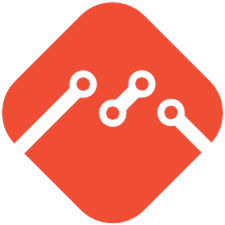
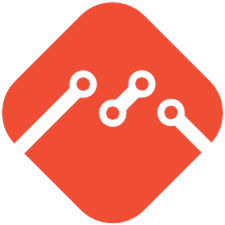

Sobre Mim
Eu me chamo Miguel, mas você me encontrará por aí como mgcvale. Tenho 16 anos, e sou estudante do segundo ano do ensino médio.
Minha Formação
Atualmente eu estou estudando no Cotil (2023 - 2025), o Colégio Técnico da Unicamp de Limeira, e estou cursando Desenvolvimento de Sistemas, no segundo ano.
Nesse curso, nós aprendemos o básico de todas as etapas do desenvolvimento de sistemas de informação, da análise e projeto ao desenvolvimento de fato. Aprendemos desenvolvimento Web front-end e back-end, Desktop, Banco de dados, mobile, documentação de software entre outros.
Meu Interesse Na Programação
Desde cedo eu sempre tive muito interesse com tecnologia e computadores em geral, mexendo com jogos, sistemas operacionais e até programação, e por isso não apenas gosto do meu curso, como procuro ir além do que é ensinado, com projetos e aprendizados pessoais. Eu valorizo muito as oportunidades que tenho, e por isso aproveito elas ao máximo de todas as maneiras que consigo.
Tecnologias que sei

 
